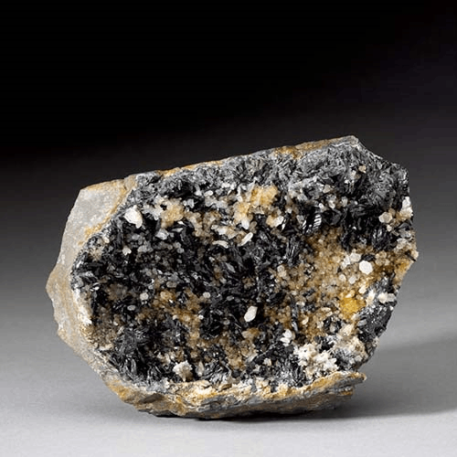

Kulanite - BaFe2+2Al2 (PO4)3(OH)3
Phosphates


Habit: Green to blue. Thin, flattened tablets forming rosettes of up to 3 mm. Vitreous luster; transparent to translucent. Greenish white streak.
Environment: A weathering product in fractures in sideritic iron formations (Cross Cut Creek, Yukon Territory, Canada) and found as disseminations and veinlets in a granitic pegmatite (Xiyuantou, China).
Etymology: Named for Alan Kulan (1921-77), a prospector who was co-discoverer of the Rapid Creek phosphate occurrences in Yukon.